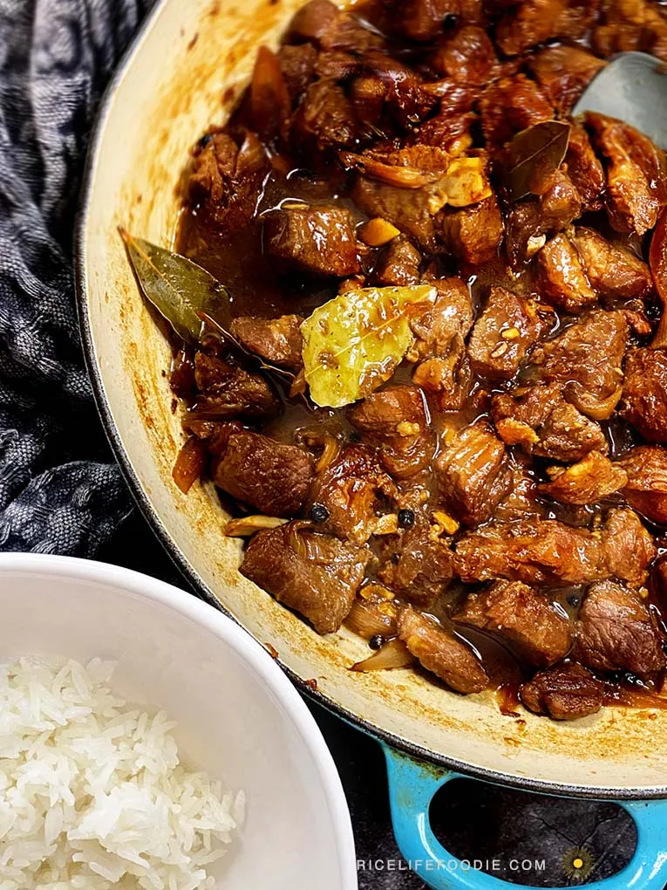

Home
Adobong Baboy ni Mama

Considered by some as the pride of Filipino cuisine, Pork Adobo is definitely a favorite among many around the world. For this, we cook pork slices in a perfect mix of soy sauce, vinegar, and garlic to make this savory and sour viand. And I’ve got to say, it’s definitely a great way to introduce the world to what Pinoy cooks can make! But actually, there are other renditions of adobo.
Ingredients
- 1 kg pork belly or shoulder, cut into chunks
- 1/2 cup soy sauce
- 1/2 cup vinegar
- 1 cup water
- 1 whole garlic bulb, peeled and crushed
- 2–3 bay leaves
- 1 tsp whole black peppercorns
- 1 tbsp cooking oil
- 1 tbsp brown sugar (optional)
- Salt and pepper to taste
Steps to make this yummy salad
- In a bowl, combine pork, soy sauce, half of the garlic, and peppercorns. Let it marinate for at least 30 minutes or overnight.
- Heat oil in a pan. Sauté the remaining garlic until fragrant. Add the marinated pork and cook until browned.
- Pour in the saved marinade, vinegar, bay leaves, and water. Do not stir until the vinegar boils.
- Once boiling, reduce heat and cover. Let it simmer for 45 minutes to 1 hour or until the pork is tender. Stir occasionally.
- Add brown sugar if desired. Adjust salt and pepper to taste.
- Optional: Uncover and simmer longer to reduce the sauce for a thicker consistency.
- Serve hot with steamed rice. Enjoy!